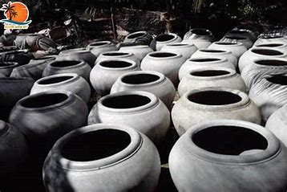

Làng nghề đúc lu Hòa Lợi, tọa lạc tại huyện Giồng Trôm, tỉnh Bến Tre, từ lâu đã nổi tiếng với nghề đúc lu truyền thống. Với bề dày lịch sử và văn hóa đặc sắc, Hòa Lợi không chỉ sản xuất những sản phẩm thủ công mỹ nghệ mà còn gìn giữ và phát huy những giá trị văn hóa dân gian của vùng đất xứ dừa.
Làng nghề đúc lu Hòa Lợi xuất hiện cuối thế kỷ 19, phát triển từ nhu cầu lưu trữ nước và trở thành sản phẩm tiêu biểu của Bến Tre.Nguyên liệu chính để sản xuất lu là đất sét. Người dân Hòa Lợi thường tìm kiếm đất sét từ các bờ sông hoặc khu vực gần các đầm lầy. Đất sét phải đạt tiêu chuẩn về độ dẻo và độ bền, đảm bảo lu sau khi nung sẽ có chất lượng tốt.
Nguyên liệu chính để sản xuất lu là đất sét. Người dân Hòa Lợi thường tìm kiếm đất sét từ các bờ sông hoặc khu vực gần các đầm lầy. Đất sét phải đạt tiêu chuẩn về độ dẻo và độ bền, đảm bảo lu sau khi nung sẽ có chất lượng tốt.
Sau khi thu hoạch đất sét, công đoạn tiếp theo là xử lý nguyên liệu. Đất sét được làm sạch, loại bỏ tạp chất như đá, rác và các tạp chất khác. Sau đó, đất được ngâm nước cho đến khi mềm, giúp dễ dàng hơn trong việc tạo hình.
Quá trình tạo hình lu đòi hỏi sự khéo léo và kinh nghiệm của người thợ. Người thợ sẽ dùng tay và các dụng cụ đơn giản để nặn đất thành hình dạng của lu. Công đoạn này cần sự tỉ mỉ và kiên nhẫn, vì chỉ cần một sai sót nhỏ có thể làm hỏng toàn bộ sản phẩm.
Sau khi tạo hình, lu sẽ được phơi khô tự nhiên trong khoảng vài ngày. Công đoạn này rất quan trọng, bởi nếu không sấy khô kỹ, lu sẽ dễ bị nứt trong quá trình nung.
Lu được nung trong lò với nhiệt độ cao để đảm bảo độ bền và độ cứng. Đây là công đoạn quyết định đến chất lượng sản phẩm. Nung đủ nhiệt độ sẽ giúp lu có màu sắc đẹp và độ bền cao, đủ khả năng chịu được áp lực từ nước và thời tiết.
Sau khi nung xong, lu sẽ được kiểm tra chất lượng. Những sản phẩm đạt yêu cầu sẽ được trang trí và làm sạch, sẵn sàng cho việc tiêu thụ. Các sản phẩm từ lu không chỉ được sử dụng trong gia đình mà còn được bán ra thị trường.